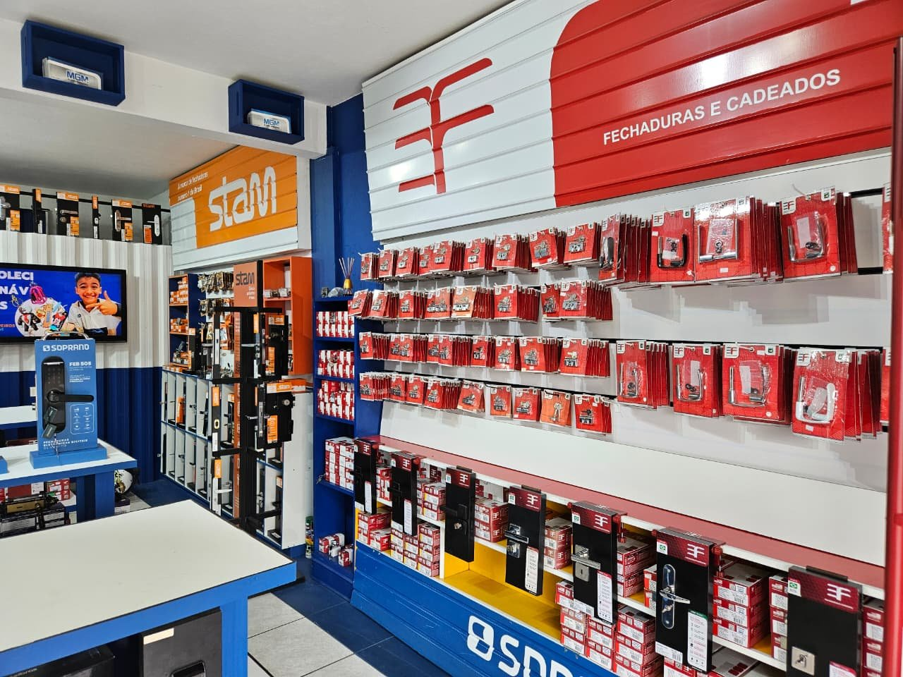
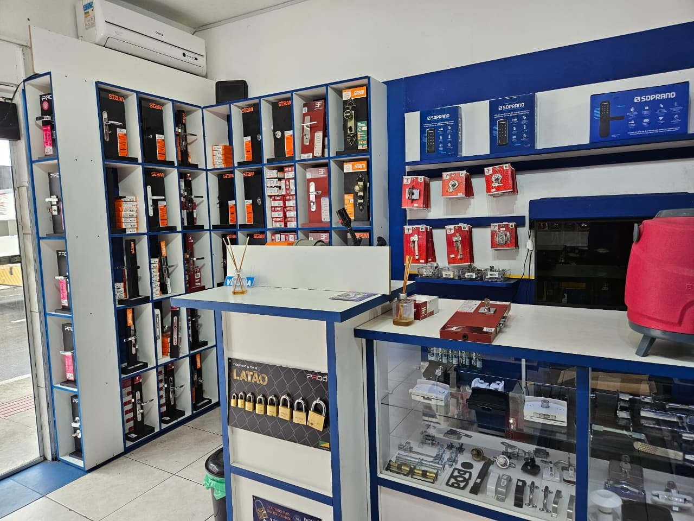
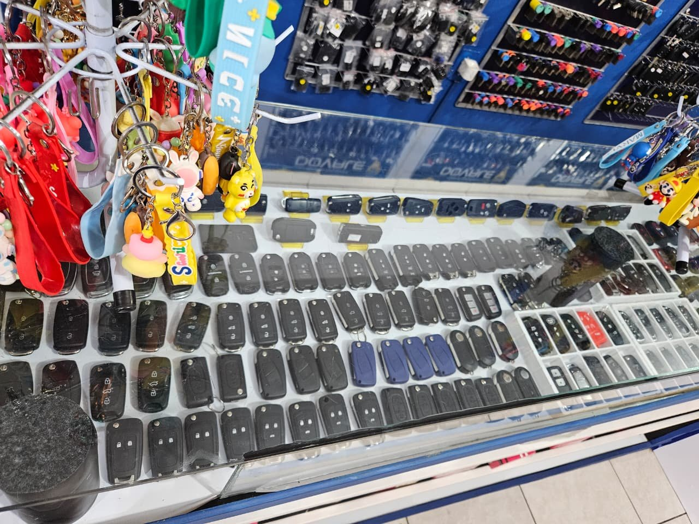
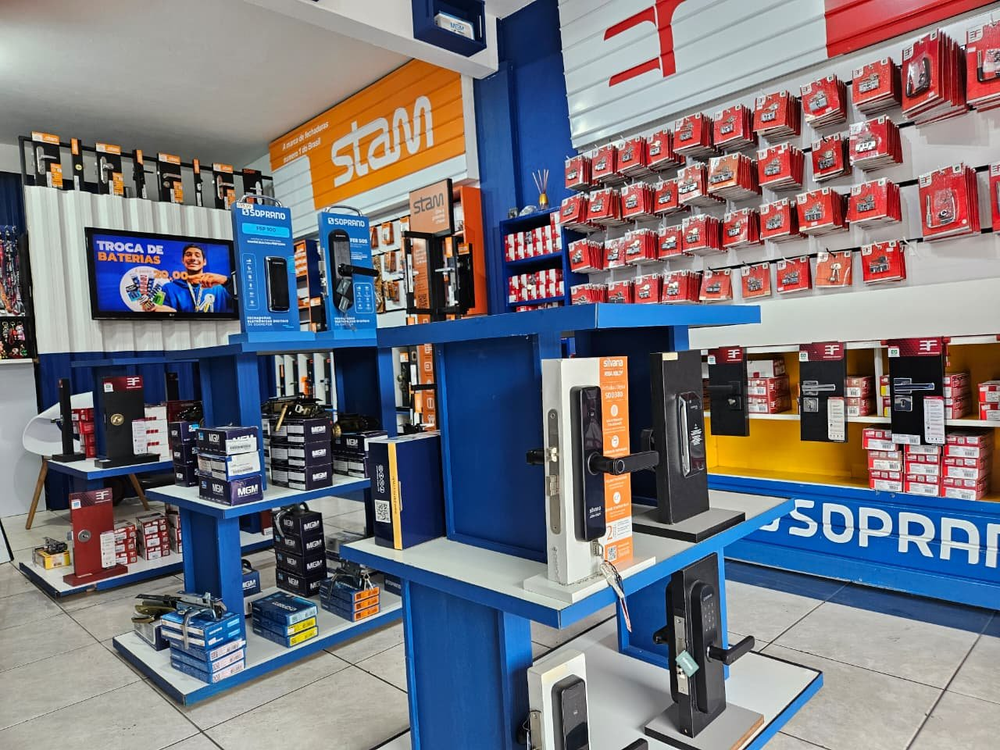
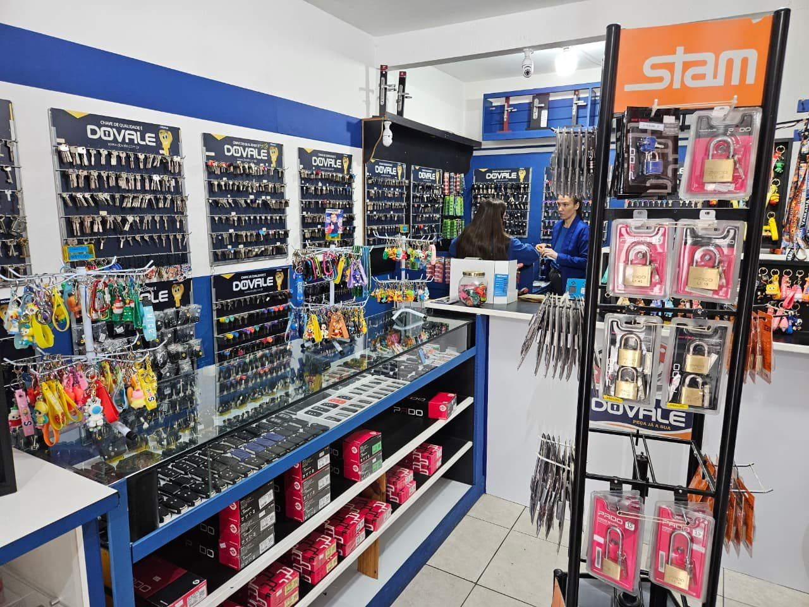

Cópias de Chaves
Cópias de chaves residenciais, comerciais e especiais com precisão e qualidade.
- Chaves simples
- Chaves especiais
- Chaves de segurança
- Entrega rápida
Cópias de chaves, soluções automotivas e fechaduras para sua casa ou comércio. Conte com a equipe TOWNER em Navegantes.
Emergências com atendimento 24 horas, todos os dias.
Atendimento todos os dias
Loja no Centro da cidade
Mais de 15 anos de atuação
Fale diretamente com o chaveiro de plantão.
Conheça um pouco da loja e das soluções disponíveis para sua casa, veículo ou comércio.

Variedade de fechaduras e cadeados disponíveis na loja

Expositores de fechaduras residenciais e digitais

Mostruário de chaves e controles automotivos

Produtos e soluções de segurança para casa e comércio
Oferecemos uma ampla gama de serviços de chaveiro com qualidade e confiança em Navegantes SC
Cópias de chaves residenciais, comerciais e especiais com precisão e qualidade.
Especialistas em chaves de carros, motos e veículos comerciais.
Instalação, reparo e troca de fechaduras para sua casa.
Atendimento de emergência 24 horas para situações urgentes.
Soluções de segurança para estabelecimentos comerciais.
Manutenção preventiva e corretiva de fechaduras e sistemas.
Atendimento local e soluções para diferentes momentos do seu dia a dia.
Mais de 15 anos de atuação atendendo a comunidade local.
Chaves, fechaduras e soluções para residências, veículos e comércios.
Atendimento de emergência 24 horas, todos os dias.
Atendimento em Navegantes e região

Há mais de 15 anos, a TOWNER atende Navegantes com serviços de chaveiro e soluções para proteger casas, veículos e comércios.
Na loja, você encontra opções de chaves, fechaduras e produtos de segurança. Para uma cópia, uma orientação ou uma emergência, nossa equipe está pronta para entender o que você precisa.
Endereço
Rua Vereador Nereu Liberato Nunes, 32
Centro - Navegantes, SC
CEP: 88370-232
Abrir endereço no Google Maps
Consulte disponibilidade para atendimento em Itajaí, Balneário Camboriú, Penha e Piçarras.
Horário de Funcionamento
Segunda a Sexta: 8h às 18h
Sábado: 8h às 12h
Emergências: atendimento 24 horas, todos os dias
Telefone
(47) 99129-2376 (WhatsApp disponível)
Rua Vereador Nereu Liberato Nunes, 32
Centro — Navegantes, SC · CEP 88370-232
O mapa é carregado pelo Google Maps. Ao carregá-lo, dados de conexão podem ser compartilhados com esse provedor.